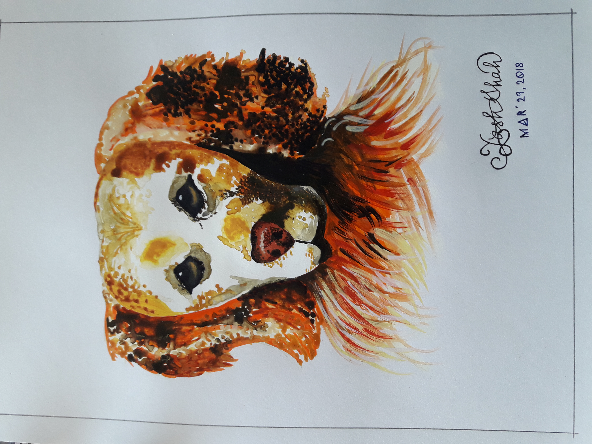
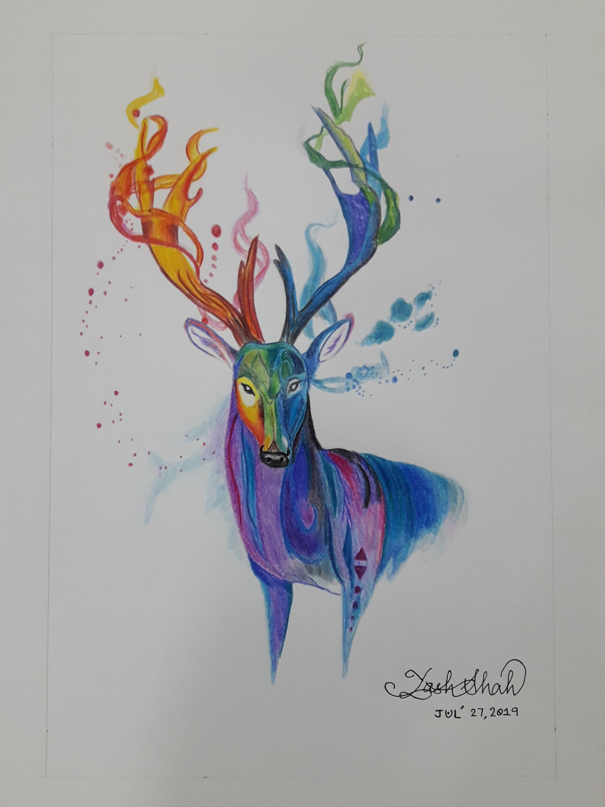
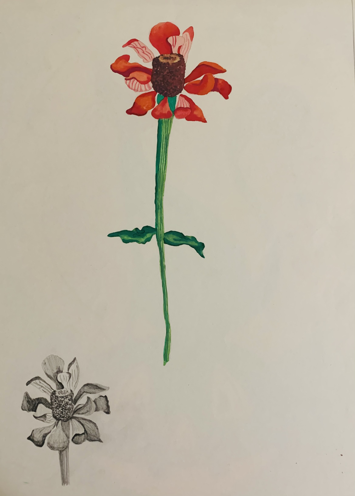
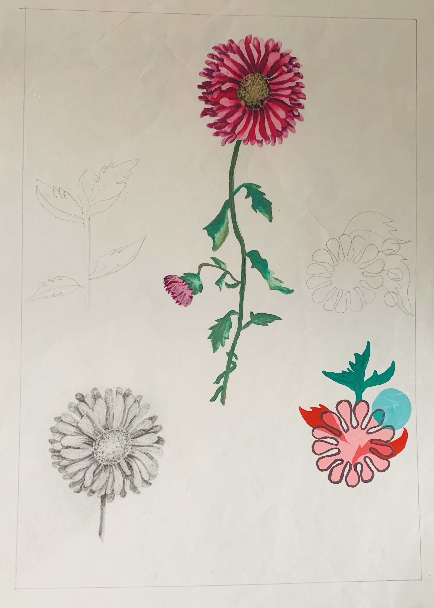
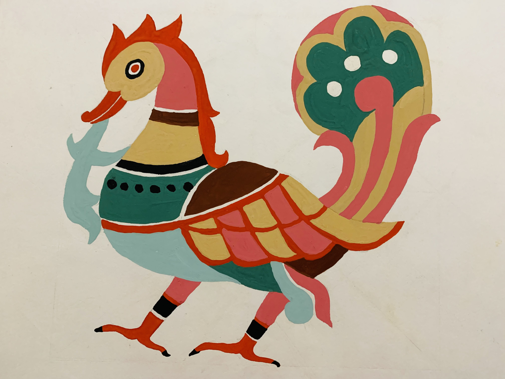
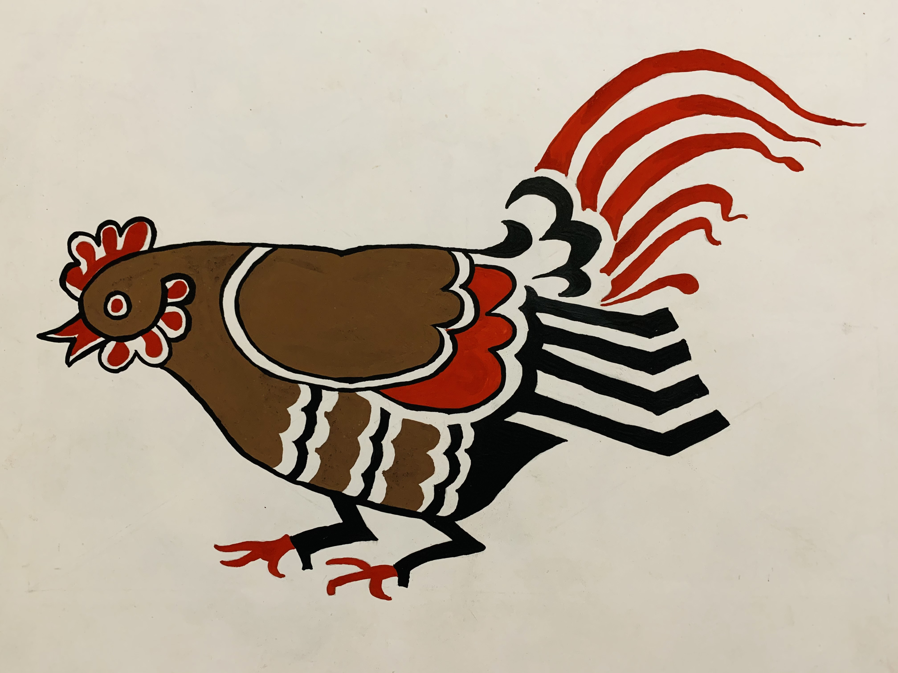
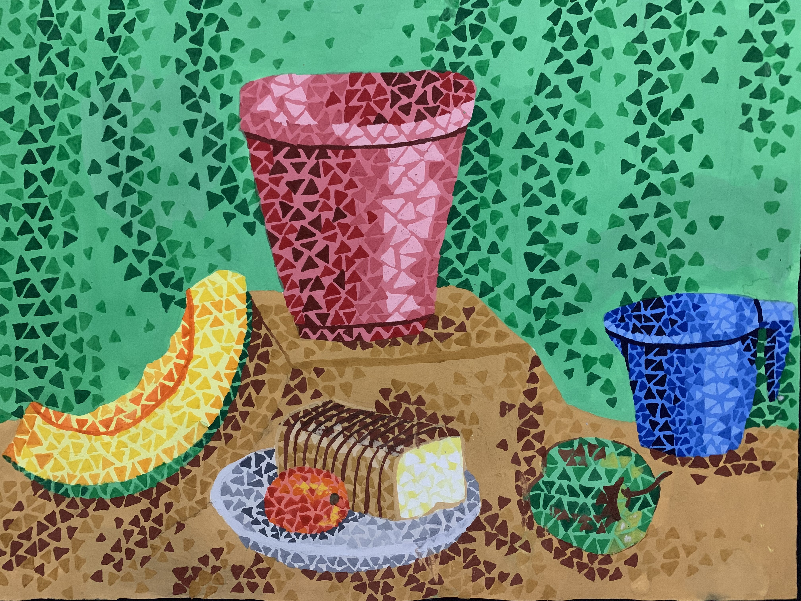

My name is Yash Shah. I am a second-year Computer Science major at University of California, San Diego.
The reason why I chose major in CS goes back to the first ever computers course that I took when I was in second grade.
Microsoft was very popular around that time. I remember the teacher taking us to the computer lab.
We were all made to sit in pairs and asked to open Microsoft Paint. Being a kid, painting on the computer screen,
using different colors, making lines, circles, curves, and showing off our paintings to fellow classmates was very amusing.
As I grew older, I learnt more and more topics in Computer Science. From MS Word to MS Excel, MS Powerpoint, Logo (my first programming language),
HTML, JavaScript, C++, and so on. My interest in computers had developed so much by the time I was in twelfth grade that I
decided to major in CS.
Part of the reason why my interest in CS started developing with MS Paint is my continued obsession with painting.
I like to paint. You will probably see folders full of paintings when you come to visit me!
Among the many paintings that I have made, I present a few of them and the intention behind doing them.
Paintings


Painting 1, 2 - Watercolors
These two are among my most recent of paintings
They depict my inclination toward colors and animals


Painting 3, 4 - Nature
Nature is a wonderful inspiration for an artist
These flowers show that there is beauty all around us and that we need to observe and appreciate them


Painting 5, 6 - Freehand
Freehand drawings have taught me that there is so much symmetry in various life forms
It also helps better the coordination between the eye and the hand

Painting 7 - Still Life
Objects are art
There is so much texture, color, and sophistication in our daily-use objects
Studing them helps me look at art from a different perspective
Books
Table - Books I have read and I like
Book Name
|
Book Description
Odyssey, by Homer
|
Takes you on an adventurous journey with Odysseus full of monsters and battles
Aeneid, by Virgil
|
Another adventurous epic portraying the adventures of Aeneas and the founding of Rome
Consolation of Philosophy, by Boethius
|
If you are interested in philosophy - ethics, virtue, morality, good vs bad, etc.
Paradise Lost, by Milton
|
The original sin committed by Adam and Eve and their subsequent expulsion from Paradise
Divine Comedy, by Dante
|
The iconic categorization of Inferno, Purgatorio, and Paradiso
Break
Phew! That was so much information! I think that it is time for a break before going on to the last section of the page!
Do you want to hear some audio?
Do you want to see a video?
Form
Thank you so much for being with me till the end! Hope you had a fun time and hope some of it was inspiring!
It would really mean a lot if you could spare a few more minutes and let me know how I did, any comments, or if want me to check out your page, there will be a section to drop your socials too!